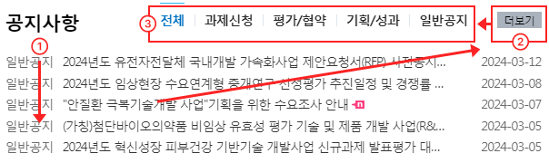

웹 접근성 지침
개요
- 장애인, 노인 등이 차별 없이 웹사이트에서 제공하는 콘텐츠를 인식하고, 이를 운영하고 이해할 수 있도록 제작하는 것을 의미합니다.
- 웹 접근성과 관련된 모든 지침은 웹 접근성 연구소(www.wah.or.kr)에서 다운로드 받을 수 있습니다.
1. 인식의 용이성
사용자가 장애 유무에 관계 없이 웹 사이트에서 제공되는 콘텐츠를 인식할 수 있도록 제공하는 것을 의미합니다.
1-1 적절한 대체 텍스트 제공
텍스트 아닌 콘텐츠는 그 의미나 용도를 이해할 수 있도록 대체 텍스트를 제공해야 한다.
/* 잘못된 예 */
<a href=""><img src="../images/example/icon_approval01.png"/></a>/* 올바른 예 */
<a href=""><img src="../images/example/icon_approval01.png" alt="승인 버튼"/></a>/* 잘못된 예 */
<a href=""><img src="../images/example/baner_01.png" alt="NTIS 홍보 배너"/></a>/* 올바른 예 */
<a href=""><img src="../images/example/baner_01.png" alt="NTIS가 홍보 배너영역을 개방합니다.
NTIS에서 홍보 배너를 이용해주세요.
NITS 이용자에게 유익한 정보와 소식을 제공해주기 위해 NTIS 배너 영역을 개방합니다."/></a>/* 올바른 예 */
<img alt=“상세 내용은 하단 텍스트로 대체">
<div>NTIS에서 홍보 배너를 이용해주세요. NITS 이용자에게 유익한 정보와 소식을 제공해주기 위해 NTIS 배너 영역을 개방합니다.</div>1-2 자막 제공
멀티미디어 콘텐츠에는 자막, 원고 또는 수화를 제공해야 한다.
자막, 수화 또는 원고 등이 제공되지 않아서 청각 장애인의 경우 어떤 설명을 하고 있는지 내용을 이해할 수가 없게 됩니다.

영상 안에서 텍스트 정보가 제공되고 있으나 이를 음성으로 제공하지 않으면 청각 장애인의 경우 내용을 인식하는데 문제가 없으나 음성정보에 의존하는 시각장애인의 경우 아무 내용도 없는 것으로 생각할 수 있으므로 텍스트 내용을 그대로 음성 출력해주거나 관련 음성파일을 다운 받을 수 있도록 해주는 것이 원칙이며 원고를 제공하여 화면 낭독기로 내용을 파악할 수 있도록 해주는 것도 좋은 방법입니다. 만약 원고의 내용이 길어진다면 스크롤을 주어 영상화면과 함께 원고 내용을 볼 수 있도록 하여야 합니다.
2. 명료성
콘텐츠에서 제공하는 모든 정보는 특정한 색을 구별할 수 없는 사용자, 흑백 디스플레이 사용자, 흑백 인쇄물을 보는 사용자 및 고대비 모드 사용자가 인식할 수 있도록 제공하는 것을 의미합니다.
2-1 색에 무관한 콘텐츠 인식

색보다는 가능한 명도나 무늬를 이용해서 콘텐츠의 차이를 인식할 수 있도록 하는 것이 좋습니다.
2-2 명확한 지시 사항 제공
지시사항은 모양, 크기, 위치, 방향, 색, 소리 등에 관계없이 인식될 수 있어야 한다.

2-3 텍스트 콘텐츠의 명도 대비
- 텍스트 콘텐츠와 배경 간의 명도 대비는 4.5대 1 이상이어야 한다.
- 명도대비 체크 - Contrast Finder 바로가기

2-4 콘텐츠 간의 구분
- 모든 이웃한 콘텐츠는 시각적으로 구분될 수 있도록 구현해야 합니다.
- 콘텐츠 사이에 구분선을 두거나, 테두리를 통한 구분, 줄 간격 및 글자 간격을 조절하여 구분할 수 있도록 제공해야 합니다.


3. 운용의 용이성
사용자 인터페이스 구성요소는 조작 가능하고 내비게이션 할 수 있어야 한다.
3-1 키보드 사용 보장
모든 기능은 키보드만으로도 사용할 수 있어야 한다. (PC웹)
3-2 자동으로 변경되는 콘텐츠를 제어할 수 있도록 제공
콘텐츠가 자동으로 갱신되거나 롤링이 되는 경우 사용자가 이를 제어할 수 있는 기능을 제공되어야 한다.

자동으로 움직이는 배너이지만 정지, 다음, 이전 기능이 제공되고 있지 않아 제어할 수가 없다.

자동으로 변경되는 콘텐츠는 움직임을 제어할 수 있어야 한다.
3-3 제목 제공
페이지, 프레임, 콘텐츠 블록에는 적절한 제목을 제공해야 한다.
/* 잘못된 예 */
<title>사업소개</title>/* 올바른 예 */
<title>사업소개 > 사업개요 | 보건의료기술종합정보시스템</title>3-4 적절한 링크 텍스트
링크 텍스트는 용도나 목적을 이해할 수 있도록 제공해야 한다
/* 잘못된 예 */
<a href="pdf.pdf">PDF보기</a>/* 올바른 예 */
<a href="pdf.pdf" title=“2011년 은행계정 재무상태표”>PDF보기</a>4. 이해의 용이성
사용자 인터페이스 구성요소는 조작 가능하고 내비게이션 할 수 있어야 한다.
4-1 사용자 요구에 따른 실행

- 키보드로 셀렉트 박스에 진입하여 화살표 방향키를 눌러 이벤트가 가장 첫 옵션에서 지정한 웹 사이트로 이동해버리게 됩니다. 결국 키보드 사용자는 첫 선택만이 가능한 상황이 됩니다.
/* 잘못된 예 */
<label for="">단체표준인증 종합포털</label>
<select onchange="”>
<option value="">경기도 교육청 관련기관</option>
<option value="">경기도교육청</option>
</select>
- 최종 이동할 수 있도록 이동버튼을 별도로 제공하여 의도하지 않은 실행이 일어나지 않도록 만들 수 있습니다.
/* 올바른 예 */
<p>
<select class="form-control xxl" name="dirGogo" id="dirGogo1" title="관련기관">
<option value="">관련기관 바로가기</option>
<option value="http://www.mohw.go.kr/">보건복지부</option>
<option value="http://www.cdc.go.kr/">질병관리청</option>
<option value="http://www.ncc.re.kr/">국립암센터</option>
<option value="http://www.kbio.kr/">오송첨단의료산업진흥재단</option>
<option value="http://www.dgmif.re.kr/">대구경북첨단의료산업진흥재단</option>
<option value="http://www.kcii.re.kr/">대한화장품산업연구원</option>
<option value="http://kddf.org/Main?intro.asp">범부처신약개발사업단</option>
<option value="http://www.konect.or.kr/">한국임상시험산업본부</option>
<option value="http://www.neca.re.kr/">한국보건의료연구원</option>
<option value="http://www.ncmh.go.kr">국립정신건강센터</option>
<option value="http://www.nikom.or.kr">한약진흥재단</option>
<option value="/popup/oneStopNtis.do">NTIS</option>
</select>
<button type="button" onclick="javascript:fn_dirGogo(1);" class="btn" title="새창으로 열림">이동</button>
</p>- 키보드로 셀렉트 박스에 진입하여 화살표 방향키를 눌러 이벤트가
/* 잘못된 예 */
<ul class="rule">
<li><a href="#">클린신고센터</a></li>
<li><a href="#">연구부정행위신고</a></li>
<li><a href="#">이메일주소 무단수집거부</a></li>
<li><a href="#">개인정보처리방침</a></li>
</ul>/* 올바른 예 */
<ul class="rule">
<li><a href="#" target="_blank" title="새창으로 열림">클린신고센터</a></li>
<li><a href="#" target="_blank" title="새창으로 열림">연구부정행위신고</a></li>
<li><a href="#" target="_blank" title="새창으로 열림">이메일주소 무단수집거부</a></li>
<li><a href="#" target="_blank" title="새창으로 열림">개인정보처리방침</a></li>
</ul>4-2 콘텐츠의 선형화
콘텐츠는 논리적인 순서로 제공해야 한다.

/* 잘못된 예 */
<h2><a href=“”>새소식</a></h2>
<h2><a href=“”>언론보도</a></h2>
<div>
<ul>
<li>2012년도 녹색제품 구매실적 및 2013년도 녹색제품 구매계획</li>
<li>사내방송 Today KOMSCO 125회차</li>
<li>한국조폐공사 사내방송 124회차</li>
</ul>
</div>
<div>
<ul>
<li>조폐공사, 공사 최초 미국 마켓시장 상품권 수출</li>
<li>「노사상생협력 유공」 국무총리 표창 수상</li>
<li>‘가장 아름다운 지자체상품권’에 경주시</li>
</ul>
</div>
/* 올바른 예 */
<section class="news_area">
<div class="float_wrap">
<h2 class="subject">공지사항</h2>
<ul class="notice-tab">
<li class="active" id="noticeAll"><a href="#" title="선택된 탭메뉴">전체</a></li>
<ul id="bbs-list" class="brief-list">
<li>
<a href="#">
<span class="tag">일반공지</span>
<span class="list-title">2024년 한국형 ARPA-H 프로젝트 관리자(PM, Project Manager) 채용 공고</span>
<span class="date">2024-02-23</span>
</a>
</li>
<li>
<a href="#">
<span class="tag">일반공지</span>
<span class="list-title">2024년도 제1차 혁신성장 피부건강 기반기술 개발사업 신규지원 대상과제 경쟁률 및 선정평가 추진 일정 안내</span><span class="date">2024-02-23</span>
</a>
</li>
<li>
<a href="#">
<span class="tag">일반공지</span>
<span class="list-title">국립재활원 재활연구개발지원사업 기술수요조사 안내</span>
<span class="date">2024-02-23</span>
</a>
</li>
<li>
<a href="#">
<span class="tag">일반공지</span>
<span class="list-title">2024년도 제1차 보건의료기술 연구개발사업 신규지원 대상과제 통합공고 분야별 선정평가 추진일정 및 경쟁률 안내</span>
<span class="date">2024-02-22</span>
</a>
</li>
<li>
<a href="#">
<span class="tag">일반공지</span>
<span class="list-title">보건의료 R&D 과제평가 전문성 제고 발전방향</span>
<span class="date">2024-02-20</span>
</a>
</li>
<p class="txt_more"><a href="#o" title="더보기 버튼">더보기</a></p>
</ul>
<li class="notice-tab-item"><a href="#" title="비활성 탭메뉴">과제신청</a></li>
<li class="notice-tab-item"><a href="#" title="비활성 탭메뉴">평가/협약</a></li>
<li class="notice-tab-item"><a href="#" title="비활성 탭메뉴">기획/성과</a></li>
<li class="notice-tab-item"><a href="#" title="비활성 탭메뉴">일반공지</a></li>
</ul>
</div>
</section>4-3 표의 구성
표는 이해하기 쉽게 구성해야 한다.
/* 잘못된 예 */
<table>
<tr>
<th rowspan=“2”>합계(권)</th>
<th>000</th>
</table>/* 올바른 예 */
<table>
<caption>2024년 예산 현황 : 지원내용, 23년 예산, 24년 계속예산, 24년 신규 예산, 24년 합계 정보제공 </caption>
<colgroup>
<col style="*">
<col style="*">
<col style="*">
<col style="*">
<col style="*">
<col style="*">
</colgroup>
<thead>
<tr>
<th scope="col" rowspan="2">지원 내용</th>
<th scope="col">23년 예산</th>
<th scope="col" colspan="4">24년 예산</th>
</tr>
<tr>
<th scope="col">예산(A)</th>
<th scope="col">계속</th>
<th scope="col">신규</th>
<th scope="col">합(B)</th>
<th scope="col">B - A</th>
</tr>
</thead>
<tbody>
<tr>
<th scope="row" colspan="6">응급실 특화 AI 기반 임상지원시스템 개발사업</th>
</tr>
<tr>
<th scope="row">· 응급실 특화 AI 기반 임상지원시스템 개발</th>
<td>-</td>
<td>-</td>
<td>3,600</td>
<td><b>3,600</b></td>
<td>순증</td>
</tr>
<tr>
<th scope="row">합계</th>
<td>-</td>
<td>-</td>
<td>3,600</td>
<td><b>3,600</b></td>
<td>순증</td>
</tr>
</tbody>
</table>4-4 레이블 제공
- <label>태그와 <input>태그를 함께 사용해야 한다.
- <label>태그에 for="" 값과 <input>태그에 ID=""값은 같아야 한다.
<form>
<div class="item_form fst">
<div class="box_tf">
<label for="loginId">계정정보 입력</label>
<input type="text" id="loginId" placeholder="계정정보 입력">
</div>
</div>
<div class="item_form">
<div class="box_tf">
<label for="password">비밀번호 입력</label>
<input type="password" id="password" placeholder="비밀번호 입력">
</div>
</div>
<div class="set_login">
<div class="item_choice">
<span>
<input type="checkbox" id="saveSignedIn">
<label for="saveSignedIn">
간편로그인 정보 저장
</label>
</span>
<button type="button">
<span>도움말 보기</span>
</button>
</div>
</div>
</form>
/* 잘못된 예 */
<div class="search-table-wrap">
<div class="float_wrap">
<span>
<label for="searchP">과제번호</label>
<input id="searchPj" type="text">
</span>
</div>
<div class="float_wrap">
<span>
<label for="searchF">연구책임자</label>
<input id="searchFl" type="text">
</span>
</div>
<button type="button">검색하기</button>
</div>/* 올바른 예 */
<div class="search-table-wrap">
<div class="float_wrap">
<span>
<label for="searchP">과제번호</label>
<input id="searchP" type="text">
</span>
</div>
<div class="float_wrap">
<span>
<label for="searchF">연구책임자</label>
<input id="searchF" type="text">
</span>
</div>
<button type="button">검색하기</button>
</div>